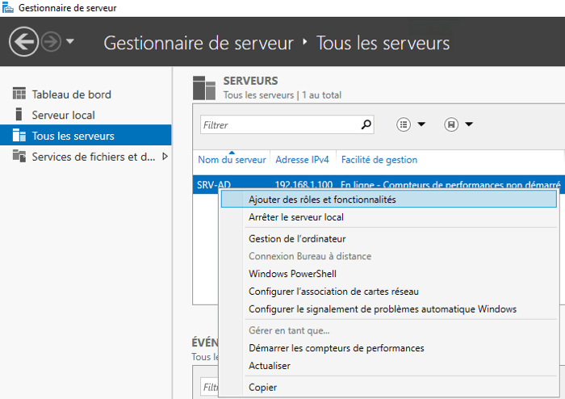

Portfolio - Allan Biville
Documentation

Installation d'une machine virtuelle
avec proxmox

Modifier les paramètres réseau
(IP,DNS,Passerelle,Masque)
d'un PC ou d'une VM

Partage de dossiers/fichiers
via groupe de travail (WorpGroup)

Installer un ActiveDirectory (AD/DS)
avec Windows Server 2016
et intégrer des PCs au domaine

Créer des scripts de
connexion au démarrage de Windows
et mappez des lecteurs réseaux